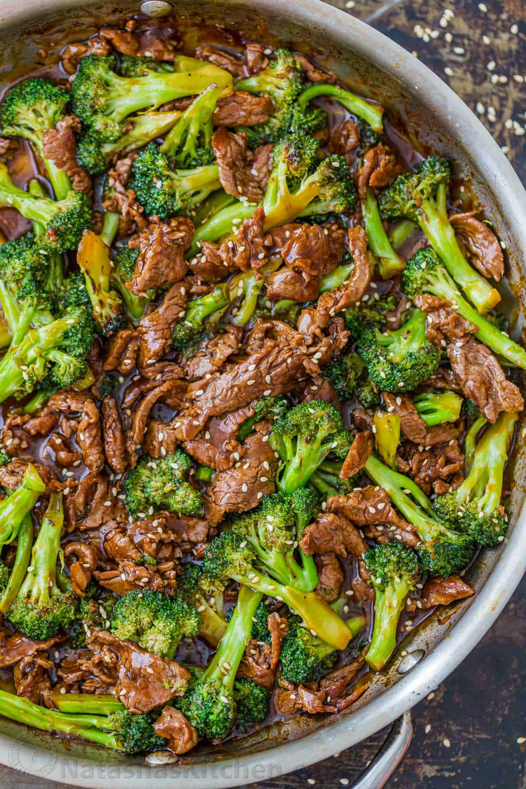

Beef and Broccoli

Description
Beef and Broccoli is a classic Chinese food takeout dish.
However, making it at home is suprisingly easy and worth while
in the end.
A well balanced mix of vegtables and meat is always a craving
of mine.
Ingredients
Beef
- 1 lb flank steak, cut into 1/4" strips
- 1 tbsp oyster sauce
- 1 tbsp light soy sauce
- 1/2 tsp salt
- 1/4 tsp white pepper
- 1/4 tsp baking soda
- 1 tbsp neutral oil
- 1 tbsp cornstarch
Sauce
- 2 tbsp light soy sauce
- 1/2 tbsp dark soy sauce
- 2 tbsp oyster sauce
- 1 tbsp sugar
- 1/2 tsp white pepper
- 1 tsp sesame oil
- 1/4 tsp msg, optional
- 1/2 cup chicken stock
- 1 tbsp shaoxing wine
- 1/2 tbsp cornstarch
Vegtables
- 1 lb broccoli, cut into 2" pieces
- 5 cloves garlic, chopped
- 1 tbsp ginger, chopped
Instructions
- Slice your beef into 1/4" strips against the grain for maximum tenderness.
- Marinate beef strips with baking soda, oyster sauce, salt, oil, and cornstarch. Set aside for 15 minutes.
- In a small bowl, mix together your sauce by combining light soy, dark soy, oyster sauce, sugar, white pepper, sesame oil, msg, shaoxing wine, chicken stock, and cornstarch. This will be your sauce. Set aside.
- Bring a pot of water to boil and blanch your broccoli 30 seconds; drain and set aside.
- Add about 4 tbsp of neutral oil to a hot pan. Sear marinated beef strips over high heat for 2-3 minutes until nicely browned. Remove and set aside.
- In the same pan and oil, fry ginger and and garlic for 15 seconds. Add back your broccoli and stir fry for 30 seconds.
- Add back the beef followed by the premixed sauce and continue cooking for 1-2 minutes until the sauce has thickened slightly and coated the beef and broccoli.
- Garnish with sesame seeds. Serve with freshly steamed white rice and enjoy!